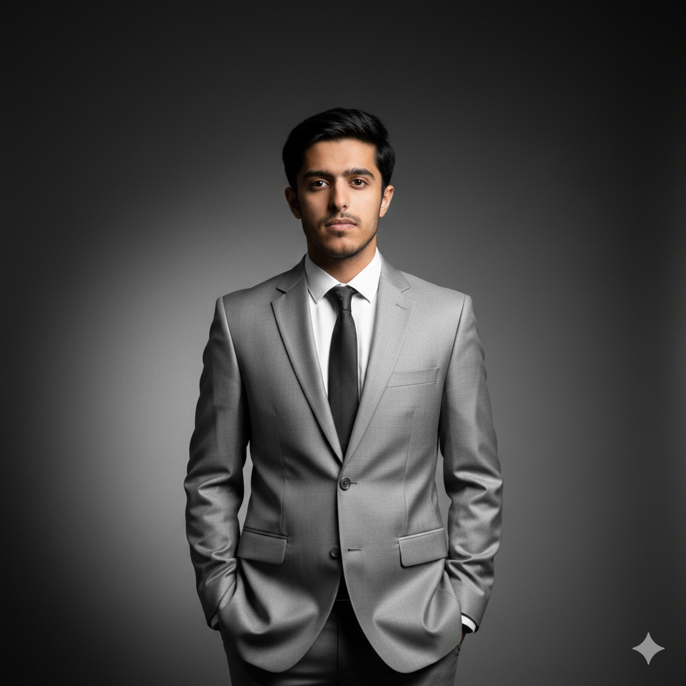

Muhammad Abdullah — AI Automation Engineer designing agentic workflows, multilingual chatbots, and end-to-end n8n systems that replace manual operations with self-running infrastructure.

I build the invisible layer that makes businesses run on autopilot — where every email, lead, and request finds its way to the right outcome without a human in the loop.
I'm a BS Computer Science undergraduate at PMAS-Arid Agriculture University, Rawalpindi, specializing in Generative AI, Agentic AI, and workflow automation using n8n. As a Research & Development Intern at NaMeta, I build AI-driven applications — including multilingual chatbots — with a focus on prompt engineering, API integration, and context-aware systems.
My approach treats automation as a craft: every workflow starts with a real bottleneck, gets mapped node-by-node, and ships as a system that quietly does the work a person used to do — drafting replies, classifying data, generating documents, logging everything for full visibility.
Outside client work, I prototype constantly — from real-time computer-vision systems to personal knowledge bases backed by vector search. I'm driven by one question: what can be automated next?
A toolkit assembled around one goal — connecting AI reasoning to real business infrastructure that runs without supervision.
From classroom fundamentals to production AI systems — the journey so far.
Building AI-driven applications including multilingual chatbots, with a core focus on prompt engineering, API integration, and intelligent context-aware systems.
Undergraduate study with a specialization in Generative AI, Agentic AI, and automation — building the theoretical foundation underlying all the applied project work below.
Pre-engineering foundation with a focus on computer science, mathematics, and physics — the launchpad into a CS degree and applied AI work.
Five distinct problems, one consistent approach: map the bottleneck, automate the decision points, and ship something that runs without supervision.
An n8n workflow that monitors Gmail continuously, uses GPT-4o to classify every inbound email, and routes it automatically — drafting meeting replies, answering client queries, creating Notion tasks, or quietly filing spam — with every action logged to Google Sheets.
A browser-based fitness system using pose estimation (MediaPipe) to detect exercises and count reps live from a webcam — push-ups, squats, lunges, and curls — powered by a low-latency FastAPI and WebSocket backend, with zero installation required.
An n8n pipeline that fans out across multiple prediction APIs to infer age, gender, and nationality from a single input, merges all responses into one structured result, and delivers the final report to Gmail — fully hands-off.
Client requirements in, professional PDF proposal out — in under two minutes. Multiple GPT-4o agents handle scope, pricing, timeline, and methodology in parallel, then PDFShift renders a formatted document and Gmail delivers it to the client automatically.
A Telegram-based knowledge management system that captures thoughts, goals, tasks, and ideas, classifies and stores them in PostgreSQL via Supabase, generates vector embeddings stored in Qdrant for semantic search, and delivers a daily GPT-4o reflection summary automatically.
A detailed look at how each system was scoped, built, and what it replaced. Diagrams reflect the actual node sequence.
An always-on n8n workflow that reads, understands, and acts on every inbound email — so the inbox manages itself, 24/7.
A growing inbox meant constant manual triage — sorting meeting requests from client questions from promotional noise, then context-switching to respond to each one individually. That overhead scales linearly with volume, every single day.
An n8n workflow polls Gmail continuously. Every new message is passed to GPT-4o for intent classification, then routed down one of four paths: meeting replies drafted against real availability, client queries researched and answered, actionable items pushed to Notion, or low-value mail filed silently — with every action logged.
Intent classification — GPT-4o reads each email and determines the correct action path in real time.
Context-aware drafting — meeting replies generated against real availability, not generic templates.
JSON-safe parsing — handles structured AI output reliably across varied email formats and encodings.
Full audit trail — every decision and action is logged to Google Sheets for complete visibility.
A single input fans out across multiple prediction APIs and returns one merged, delivered report — zero manual steps in between.
Enriching a data point with demographic attributes (age, gender, nationality) normally means querying multiple services separately, then manually stitching the results into something usable — an inefficient, repetitive task.
An n8n workflow takes one input and dispatches it in parallel to multiple prediction APIs. Responses are merged into a single structured result and emailed automatically — turning a multi-step manual lookup into one trigger with one outcome.
Parallel API calls — multiple services queried simultaneously, cutting latency vs sequential requests.
Automatic merging — disparate response shapes combined into one clean, structured payload.
Zero-touch delivery — final report lands in Gmail with no manual export or copy-paste step.
Requirements in, professional PDF proposal delivered to the client in under two minutes — multiple GPT-4o agents handle every section in parallel.
Writing a professional business proposal — scoping, pricing, timeline, methodology — typically takes hours of manual drafting, and quality varies depending on time pressure and attention available per client.
A client submits requirements through an intake form. Multiple GPT-4o agents analyze scope, complexity, tech stack, risk, and success criteria in parallel, generating every proposal section. PDFShift renders the formatted document, which is emailed to the client automatically — the entire chain runs in under two minutes.
Multi-agent analysis — separate GPT-4o agents specialize in scope, risk, and tech-stack assessment simultaneously.
Full document generation — executive summary, scope of work, methodology, pricing, payment schedule, and project timeline all automated.
Professional PDF output — formatted and branded via PDFShift, ready to send as-is without editing.
End-to-end delivery — from form submission to client inbox with zero manual handoff at any step.
Capture a thought in Telegram, retrieve it through semantic search, and wake up to a GPT-4o-written daily reflection with zero effort.
Thoughts, goals, and ideas captured throughout the day usually end up scattered across notes apps with no structure, no classification, and no way to retrieve them by meaning rather than exact keywords.
A Telegram bot acts as the frictionless capture point. Every message is classified and stored in PostgreSQL via Supabase. In parallel, OpenAI generates vector embeddings stored in Qdrant for semantic retrieval. Each evening, GPT-4o analyzes the day's entries and produces a reflection summary with insights, achievements, and next-day recommendations.
Frictionless capture — one Telegram message is all it takes to log any thought, task, goal, or idea.
Semantic search — Qdrant vector embeddings allow memories to be retrieved by meaning, not just exact keywords.
Auto-classification — every entry is tagged as a thought, goal, task, or learning note without manual input.
AI reflection — a daily summary surfaces insights and achievements without manual review or journaling effort.
The same four-stage approach behind every automation project above.
Formal grounding alongside the applied, project-driven learning above.
Whether it's an inbox, a proposal pipeline, or a workflow that doesn't exist yet — let's map it out and build the system that runs it.